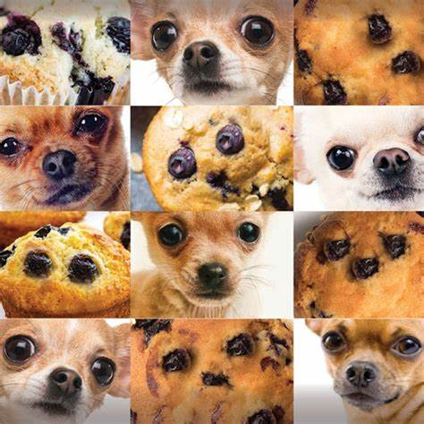

Recette de Cookies
Recette pour 6 personnes

Ingrédients:
- 1 Oeuf
- 85g de sucre
- 85 de beurre
- 100g de pépites de chocolat
- 1 sachet de sucre vanillé
- 1 cuillére à café de levure chimique
- 1/2 cuillère à café de sel
Préparation:
- Laissez ramolir le beurre à température ambiante. Dans un saladier, malaxez le avec le sucre.
- ajouter l'oeuf et éventuellement le sucre vanillé.
- Versez progressivement la farine, la levure chimique, le sel et les pépites de chocolat. Mélangez bien.
- Laissez ramolir le beurre
- Beurrer une plaque allant au four.
- Faire cuire 8 à 10 minutes à 180C soit thermostat 6.